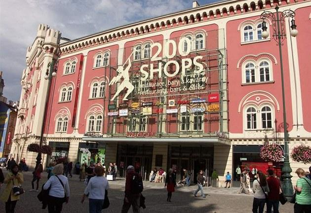
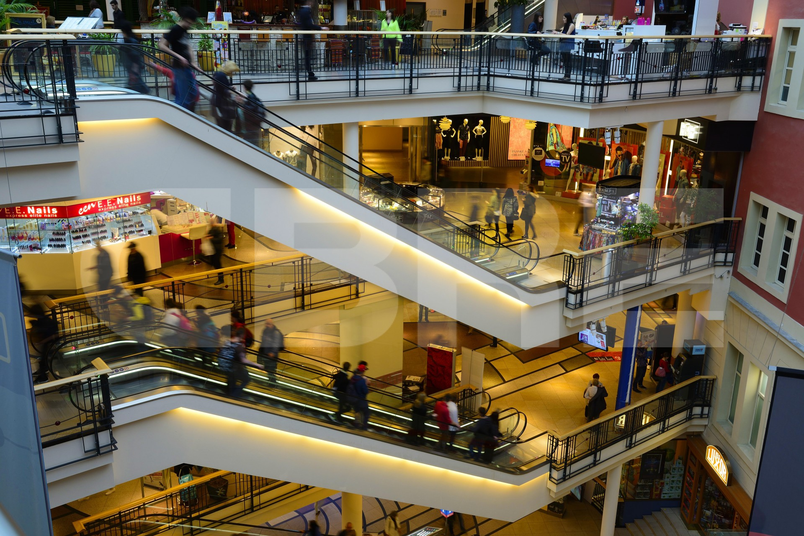

Palladium je multifunkční komplex a obchodní dům, stojící v centru Prahy na Novém Městě na východní straně náměstí Republiky.
Otevřen byl 25. října 2007.
Vznikl částečnou demolicí a přestavbou budov kasáren Jiřího z Poděbrad (původně Josefských kasáren) a vestavbou nové budovy.
Objekt má 11 podlaží (pět pater pod zemí, šest v původním rozsáhle přestavěném objektu).
Kromě obchodních prostor je součástí Palladia také zábavní centrum, v nejvyšších třech patrech se nacházejí kancelářské prostory.
Národní památkový ústav označuje tuto přestavbu za jeden z nejzávažnějších negativních zásahů v Pražské památkové rezervaci; je uváděn jako jeden z příkladů tzv. fasádistického přístupu k památkám.
 Adresa: Nám. Republiky 1078/1, 110 00 Petrská čtvrť
Otevírací doba:
Pondělí-Neděle 07:00-22:00
Kontakty:
Tel.: +420 225 770 110
Fax: +420 225 770 209
E-mail: centermanagement@palladiumpraha.cz
Více informací na: www.palladiumpraha.cz